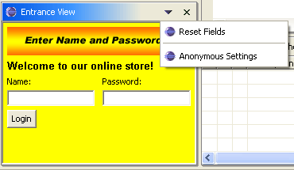
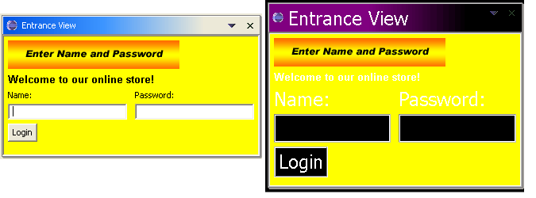
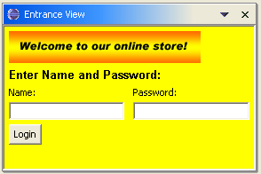
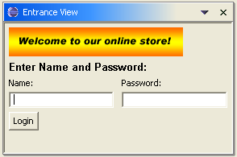
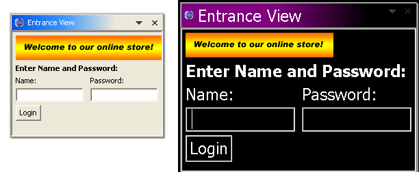
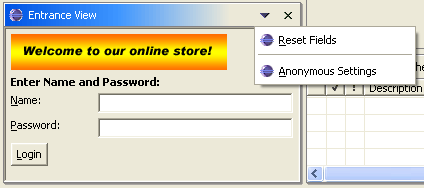
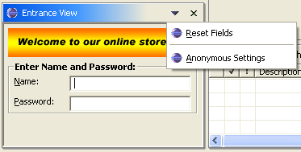
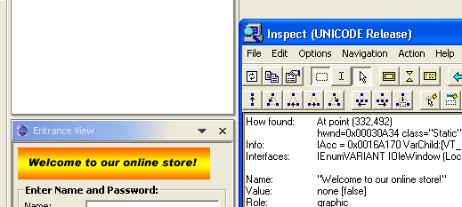
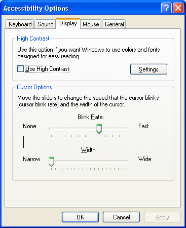

| Eclipse Corner Article |
Summary
Accessibility for disabled users is now a priority in application development as advances in techniques and support within operating systems have now made this possible. This article covers the Eclipse accessibility support, general tips for creating accessible plug-ins, and the types of disabilities that the Eclipse accessibility support assists. This is all illustrated using an example of making a view accessible.By Tod Creasey, IBM OTI Labs
May 20, 2003Updated for Eclipse 3.2
July 25, 2006
A major goal of Eclipse 2.0 was to supply support for the use of Eclipse by people with disabilities. This article deals with the support provided in Eclipse for use of accessibility tools in the Microsoft® Windows® operating systems as well as general UI design tips for people who want to make accessible applications. It also covers the US Federal government section 508 accessibility regulations and the IBMTM accessibility checklist.
Much of the work in the industry in accessibility has been driven by the US Federal Government Section 508 Regulations. This regulation is a set of criteria that computing applications must satisfy in order to be sold to the US government.
The Section 508 regulations are fairly general so IBM has provided a more detailed checklist for developers of accessible applications - see the IBM Accessibility Guidelines. Microsoft® has an accessibility section on their Web site as well - see Microsoft Accessibility.
There are several types of disability that can be dealt with in an accessible application. The main categories are mobility issues, contrast, sound and color issues and the use of screen readers.
Mobility enablement covers a wide range of issues. The main issue is the mouse. Initially a mouse was added to a computer as a labor saving option; now many applications cannot be operated without it. Many people cannot or prefer not to use the mouse because of problems with repetitive strain injuries or poor motor control. Other mobility issues deal with being able to hold multiple keys at once (accelerators), required response time to messages and visual focus indication.
Contrast and color is an issue for people who are not blind but cannot see small fonts or subtle color differences. Some people work in High Contrast mode where the only colors they use are black and white. As a result of this, color should never be used as the only way of presenting information - there should be an alternative way as well. The same issue is true for sound because not only do deaf people require visual stimulus but many people turn off their sound while working. Windows, dialogs and icons should also avoid using background and foreground colors that are too close to each other.
Screen readers such as JAWS® from Freedom Scientific make use of the Microsoft Active Accessibility support (MSAA) to read the contents of windows and dialogs to the user. SWT supports MSAA so most of the support for screen readers will come by default. Screen readers infer content from the control that has focus and its associated widgets (labels and parents). Developers also need to be careful of tab support for screen readers because this is how someone using one will navigate your application. An application using screen readers also should assume that a mouse will not be used - it is very difficult to position a pointer if you cannot see a fine detailed thing such as a mouse pointer.
We will illustrate the main accessibility issues and how to solve them in Eclipse with a simple example of a view. This view will be a simple entry view with fields for name and password and an OK button. To jazz it up we have an image instead of text for a title and have set the background to be yellow to blend in with the image. We have also made the text of our title for the entry fields bold so that it catches the eye more. Because we are trying to keep good contrast for readability we are using black text on the background. We have also added a couple of entries in the drop-down menu to allow the user to reset the view and to enter the values for an anonymous login.

Figure 1. Screen shot of input example
Here is the code that is interesting for this discussion.
public void createPartControl(Composite parent) {
// We have created a label at the top for our label image with
// a welcome label underneath. We have set its font to be a bold
// font so it is more visible. We have then defined the titles
// for our text entry fields and then the fields. Finally, we add
// a button at the bottom of the fields.
Composite workArea =
new Composite(parent, SWT.BORDER);
setBackground(workArea);
Label topLabel = new Label(workArea, SWT.NONE);
topLabel.setImage(
AccessibilityPlugin.getDefault()
.getImageRegistry().get(
AccessibilityPlugin.LOGIN_IMAGE));
Label titleLabel = new Label(workArea, SWT.NONE);
setLabelColors(titleLabel);
titleLabel.setText("Welcome to our online store!");
FontData labelFontData =
new FontData("Arial", 10, SWT.BOLD);
titleLabel.setFont(new Font(parent.getDisplay(), labelFontData));
Label nameTitle = new Label(workArea, SWT.NONE);
nameTitle.setText("Name:");
setBackground(nameTitle);
Label passwordTitle = new Label(workArea, SWT.NONE);
passwordTitle.setText("Password:");
setBackground(passwordTitle);
nameEntryField = new Text(workArea, SWT.BORDER);
passwordEntryField = new Text(workArea, SWT.BORDER);
Button enterButton = new Button(workArea, SWT.PUSH);
enterButton.setText("Login");
}
private void setBackground(Control control) {
control.setBackground(
WorkbenchColors.getSystemColor(SWT.COLOR_YELLOW));
}
private void setActionText(){
resetAction.setText("Reset Fields");
anonymousAction.setText("Anonymous Settings");
}
So far it looks fine, right? We have a drop-down menu to make some common operations easier, we have good contrasting colors (black on a yellow background), bold fonts for our welcome title and our code organized to handle the titles first and then the fields.
A common accessibility problem is presenting something that looks great with your operating system settings but that is unusable with other people's settings. This generally manifests itself as hard-coded font or color values or images that are the only source of information.
We have a problem image in our example. Our title image contains information that the user must have in order to use our application and if the user cannot read the image they cannot use our application. Users who reverse their colors or who need larger fonts won't be able to read this.
Figure 2. The title icon
The most common setup for this case is the High Contrast mode in the Windows environment. In High Contrast text is generally shown as white on a black background and all of the fonts are increased in size. High Contrast themes and modes are provided by the Windows operating system for those who cannot easily see subtle differences in shade. High Contrast comes in both white on black and black on white and any accessible application should handle both of these. Because of these settings any application that forces a background or foreground to a hard-coded color will likely fail accessibility testing. Eclipse is tested using all of the high contrast modes provided by Microsoft.
Here is the Eclipse Resource Navigator in both Normal and High Contrast modes.

Figure 3. The Navigator View in Normal and High Contrast modes
By contrast here is our view in Normal and High Contrast modes:

Figure 4. The Entrance View in Normal and High Contrast modes
The first problem we will tackle is in unreadable text and image. The yellow background makes the white text unreadable in High Contrast Mode and the image still has black text (because it is an image) despite the text being white everywhere else.
First we will fix the image. It conveys information to users that they need to know in order to proceed. Because it is an image it cannot be changed in any way to be more readable to someone who cannot read black text on a yellow background or who needs a larger font than the one we created it with.
We will replace this in our new design with an image that is decoration only and with a label that has the important information by switching around the text in the title and the text in the image because the title information is currently just a welcome banner. That way when users set their fonts in Eclipse to something they can read the information they need will be readable too. We will discuss fonts more in the next section.

Figure 5. View with the required information moved to a label
Now we have replaced the image with something that just adds aesthetic appeal, and we have made the required text a label so that it can have the same font as the others.
The next issue with our view is color. Although the yellow background blends in nicely with our image, the contrast will not work for all settings as we can see in Figure 4. People using the High Contrast settings will not be able to use this view because they are trying to see white on black.
So clearly our yellow label backgrounds will not work. The easiest solution is to just leave the colors of their widgets and let SWT do the work using the operating system settings. This is what we will do in order to stay consistent with the workbench. Most developers choose this option (as does Eclipse). There are places such as in banners in dialogs where we use a setting other than the default (Eclipse uses SWT.COLOR_LIST_FOREGROUND for the title). JFace provides an API for accessing these color choices in the JFaceColors class.
For those who want to choose system colors SWT provides a series of colors that allow us to pick up user settings. They are:
We will just delete the code that sets backgrounds and we will end up with the view shown next. The yellow background for the Composites and labels has been replaced with the system default color (gray on Windows XP).

Figure 6. View using system colors
If you still want to have a color that you set yourself you must have a way to adjust it for different color settings. Most developers use a ColorFieldEditor to allow the user to change these values. It is recommended that you only do this if there really is no system color you want to use because it adds extra complexity to the accessible setup for a user.
Color is frequently used to liven up the look of an application but remember the following guidelines:
Like colors, fonts also need to be configurable for those users who cannot see small fonts. The Windows operating system offers Large and Extra Large font size modes (see Properties>Appearance from the Windows desktop) for setting the fonts to be more readable to those with poor eyesight. All dialogs and windows should be tested with the fonts set to these sizes to be sure that none of the text is cut off and that it fits in the visible window. Eclipse is tested for sizing using the Windows High Contrast Mode in Windows XP at 1152x864 resolution using the fonts provided by the High Contrast mode. High Contrast mode can be set by selecting Control Panel->Accessibility Options -> Display -> High Contrast Mode.
As with colors, applications often require more font choice than the OS provides - the only font SWT can get from the OS is the default font for that widget. The default font can be found from any Display by calling getSystemFont(). Eclipse also defines these fonts.
In our example we defined our own font for use in the dialog using the FontData API provided by SWT because we wanted a bold font.
FontData labelFontData = new FontData("Arial", 10, SWT.BOLD);
Font labelFont = new Font(parent.getDisplay(), labelFontData);
We currently have no way for the user to change this. For the sake of consistency we will use the banner font for our main title and remove the fonts from elsewhere. Now our font creation code will be:
Font labelFont = JFaceResources.getBannerFont();
Using the Eclipse banner font we can pick up the setting an Eclipse user has made for the banner font in Eclipse and apply it to our views. These fonts are set in General>>Appearance>>Fonts and Colors preference page.
As of Eclipse 3.2 the System Default theme has been added. This theme uses the system fonts for the JFace fonts (banner, dialog and header fonts) and system colors for all of it's colors so that all fonts and colors are readable in every environment. This is the default theme for High Contrast mode. Themes are found in the General>>Appearance preference page and are a convenient way to set up a set of fonts and colors for the whole Workbench so that the user does not need to set them all individually. Themes are added using the org.eclipse.ui.themes extension point.
Here is the view with the new font and colors in both Normal and High Contrast modes.

Figure 7. View Using System Fonts
There is also a way for you to register your own font within the workbench using a declaration in your plugin.xml. If you register it using the org.eclipse.ui.fontDefinitions extension point you can get a font that is managed within the Workbench > Fonts preference page and in the JFace font registry. Most developers just use one of the provided fonts because they are adequate for most applications.
As of Eclipse 3.0 it is also possible to get a bold or italic version of any
registered font by calling FontRegistry#getBold(String) or FontRegistry#getItalic(String).
The only accessibility rule for fonts is that users must be able to change any font they wish somewhere in the application or the operating system.
The most significant requirement for accessibility is that everything in an application must be reachable using the keyboard. Without keyboard access people who do not have the motor control to get a mouse where you they want it will not be able to use your application. Many other people do everything using the keyboard as a way of preventing repetitive strain injuries so this is likely the most used accessibility feature.
Menus on any of the views provided by Eclipse are already accessible. F10 will give the main window menu focus, Shift+F10 will bring up the context menu for a view, Ctrl+F10 will activate the pull-down menu for a view if there is one and Alt+- will bring up the view menu.
To make a menu more accessible, you can define the label for the menu using a mnemonic. A mnemonic appears as an underlined letter in a menu entry label. Selecting that letter will move the menu selection to that entry. This is done by defining the mnemonic letter in the plugin.xml for a label with an & prefix. For instance a label specified as &Copy would show up on a menu as Copy; popping up the menu that has it and selecting the letter C would move the menu selection to that entry. If you want to check your mnemonics in the Windows environment then hold down the Alt key and they will appear in the active window.
You can do the same thing with widgets in a view. If you add a mnemonic in a label that is associated with a widget, selecting Alt+ the letter will move the focus to that widget. This is especially important where there are a lot of widgets in a view or dialog because tabbing through all of them can be very time-consuming.
The developer of a plug-in normally has to be concerned with mouse access when designing a view or dialog. Every piece of information within the view or dialog should be reachable using the keyboard. That means two things:
1) Every control that the user needs to manipulate (such as combo boxes, text fields, and buttons) the user should be able to navigate to it with a keystroke - usually the tab key. You can also supplement this behavior with an action using a hot key - for instance Eclipse uses Ctrl+F6, Ctrl+ F7, and Ctrl+F8 to switch between editors, views and perspectives respectively.
2) Everything that needs scrolling to be seen needs to have that scrolling accessible to the keyboard. The usual way to do this is to listen for tabs or the page up and page down keys and to move the viewing area appropriately.
In the case of our view we did not try to do anything special with tabs or widget entry so we don't need to worry about keyboard access - the behavior Eclipse gives us by default is fine. The keyboard-related problem was that our drop-down menus and widgets did not use mnemonics. All we need to do is add an & prefix before the letters we want in the mnemonic.
private void setActionText(){
resetAction.setText("&Reset Fields");
anonymousAction.setText("&Anonymous Settings");
}
In the case of text field and combo boxes that have other labels associated with them, all we have to do is add the mnemonic to the label widget. However the operating system must know which text widget is associated with which label widget when the mnemonic is selected. It does this by inferring this association using the z-order.
Default Z-ordering is determined by the creation order of widgets. The z-order is by default the order in which the widgets are created but it can be modified using Control.moveAbove() and Control.moveBelow(). A label widget must be immediately before the text widget or combo box that it is labeling in the z-order of its parent for it to be associated with it. This also implies that the two widgets must have the same parent for this behavior to occur. We take care of this by changing our code so that each label widget is created before the text widget we wish to associate it with.
All we need to do is to create the label and then its associated text rather than creating both labels first. For the sake of usability we are also going to put the name before the text horizontally rather than vertically because this is the way that people are used to reading a computer screen.
public void createPartControl(Composite parent) {
Composite workArea = new Composite(parent, SWT.BORDER);
Label titleLabel = new Label(workArea, SWT.NONE);
titleLabel.setText("Enter Name and Password:");
titleLabel.setFont(JFaceResources.getBannerFont());
Label nameTitle = new Label(workArea, SWT.NONE);
nameTitle.setText("&Name:");
nameEntryField = new Text(workArea, SWT.BORDER);
Label passwordTitle = new Label(workArea, SWT.NONE);
passwordTitle.setText("&Password:");
passwordEntryField = new Text(workArea, SWT.BORDER);
Button enterButton = new Button(workArea, SWT.PUSH);
enterButton.setText("&Login");
}
To see this in action we select Alt+N when our view has focus and you will see the cursor going to the text field beside Name:.
Figure 8. View with mnemonics for menus and widgets and corrected label placement
There are now numerous screen readers that can read aloud elements of the user interface. One of the most popular screen readers is the JAWS product from Freedom Scientific. Screen readers attempt to infer the relevant information about a widget and those that surround it and present that information to the user. They do this by taking the widget that has focus and inferring which of its siblings and parents has useful information.
As a text and combo box widgets do not have a label associated with them we have several ways that we can get a screen reader to infer a label for a widget with focus:
Our example had text and labels created in the wrong z-order. We created both the labels and then both of the entry fields. Not only does this cause problems for the mnemonics, it also prevents screen readers from providing usual information to users.
Screen readers also use the z-order to determine labeling for text and combo box widgets. Any tool that tries to infer a label for the text fields with our initial example.will assume that "Password:" is the title of the Name: text widget because the "Name:" text widget was created after the "Password:" label. It will not find any label for the "Password:" text widget because it was created right after the "Name:" text widget. With our new implementation, a screen reader will use "Name:" as the label for the name field and "Password:" for the label of the password field.
A screen reader will not only read the label of a widget with focus but it will also read the labels of any parents of that widget that have one (such as a group) and the title of the dialog or window. A screen reader will generally stop at the first unlabelled parent so be sure that you have no intermediate Composites between labels you want read. If you wish to label a group of widgets, you should contain them in a group box.
Our example should use a group box instead of a label for the Name and Password entry field. By adding a group box we would make a screen reader say "Enter Name and Password: Name:" when the first text widget had focus.
Here is what the final view looks like with the group box.

Figure 9. Entrance View with a Group box
We have changed the view so that the entry fields are created directly after their labels (to ensure z-order) and we have switched the title from a label to a group box. When one of the entry fields is selected a screen reader will read the group box title and then the field title.
Now that everything that we can see is set up, we can do one more thing we can do to really make this usable. We have no critical information in our welcome graphic, but we have not provided a way to let a user using a screen reader know that. A screen reader will associate a random name with the label widget if we do not provide one, so visually impared users will have to assume the graphic contains no information that is of use to them.
SWT provides two interfaces for enabling accessibility in a
control.org.eclipse.swt.accessibility.AccessibleListener is the
interface that is implemented by existing SWT controls.
org.eclipse.swt.accessibility.AccessibleControlListener is an
interface for custom widgets so it is not a concern if you are using the widgets
provided by SWT.
org.eclipse.swt.accessibility.AccessibleAdapter is
a class with implementations of all of the methods in AccessibleListener that
do nothing. We want to make it so that our banner graphic has a consistent name
so we add an AccessibleListener to it that implements getName().We will subclass
this in an inner class because we only want to override getName(). Here is how
we implement this:
topLabel.getAccessible().addAccessibleListener(
new AccessibleAdapter() {
public void getName(AccessibleEvent e) {
e.result = "Welcome to our online store!"
}});
After we have made this change we can verify it on the Windows operating system
using the Microsoft Active Accessibility support (see the Bibliography). When
we use the Microsoft Inspect Objects tool from that package we can see that when
we hover over the label we get a value to use with accessibility tools.

Figure 10. Verification of the AccessibleControlAdapter on the Welcome Banner using MSAA tools
The final version of our Entrance View is in AccessibleEntranceView in the code included in the Appendix.
Accessibility support is an important part of UI development; it not only enables products for disabled users but also teaches good general UI design techniques. We showed how to take a simple view and analyze and correct the accessibility issues with it using the Eclipse accessibility support.
The Accessibility Example project
Sunce the release of Eclipse 2.0 the accessibility support has focused on the Windows operating system. Windows 2000 and Windows XP provide a series of built-in accessibility features that Eclipse is compatible with. The accessibility settings in Windows XP are found in Control Panel>Accessibility Options.

Figure 11. Windows XP Accessibility Options Dialog
Extra large fonts is a setting that enlarges all of the fonts on the desktop. In Windows XP this is found on the Appearance Page of the Desktop Properties dialog. In Windows 2000 there are several themes that have extra large fonts (e.g. Windows Extra Large). Themes can also be shown in High Contrast mode for people who have difficulty differentiating colors. You should test in both High Contrast White and High Contrast Black selections.
Sticky keys is a Windows function for people who have difficulty holding down two keys at once. Sticky Keys allows the user to select a modifier key (Ctrl, Alt or Shift), release it and select another key as if they had the modifiers depressed. Normally this is only an issue if you have some time-dependent functionality in your application or if you are listening for a key release.
Filter keys is another function for people who have a slow response time. Generally holding a key down will result in the keystroke being sent multiple times which can be very frustrating for someone who cannot lift their finger in time to avoid the extra keystrokes. Filter keys either ignores duplicate keystrokes or slows down the repeat rate, or both, according to user preference.
Mouse keys is a function that allows the user to replace the mouse support with a keyboard equivalent in order to get mouse functionality without the mouse. You should not rely on this support in your accessibility plan however because an application must be fully keyboard-accessible to pass most accessibility guidelines (including the IBM guidelines).
Sound support is a function added for the deaf and hard-of-hearing users. It gives a visual cue when a system sound has occurred. However, it is bad accessibility design to use sound as the only source of information. If a user needs to use sound to use your application you should make sure there are alternative ways to access the information.
Microsoft Active Accessibility (MSAA)
IBM is a registered trademark of International Business Machines Corporation in the United States, other countries, or both.
Java and all Java-based trademarks are trademarks of Sun Microsystems, Inc. in the United States, other countries, or both.
Microsoft and Windows are registered trademarks of Microsoft Corporation in the United States, other countries, or both.
Other company, product, and service names may be trademarks or service marks of others.